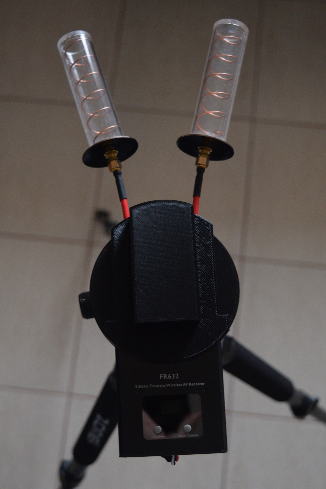
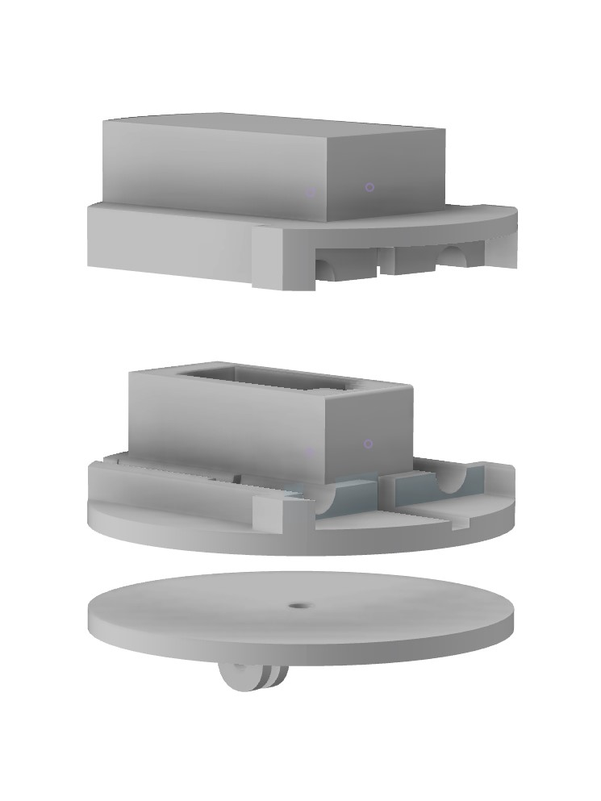
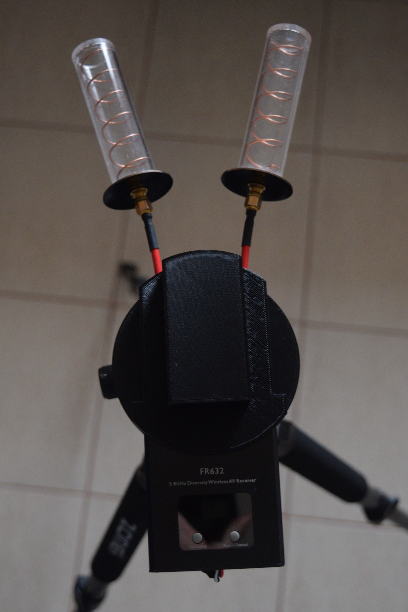
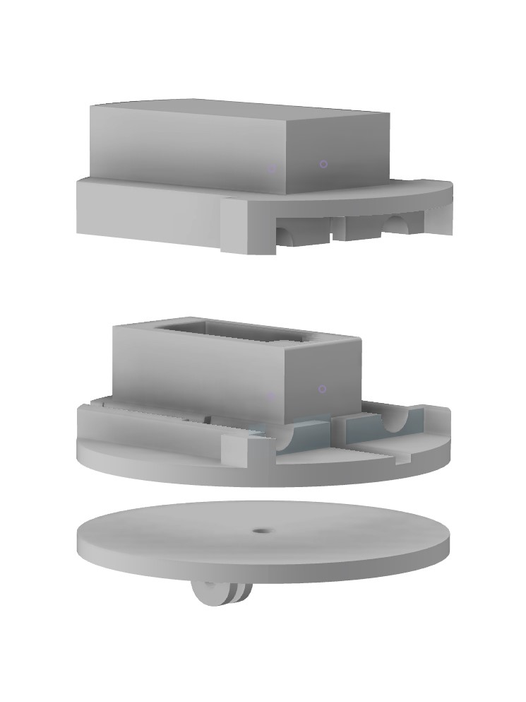

Táto stránka bola vytvorená ako semestrálna práca k predmetu Vývoj aplikácií pre internet a intranet
Na obrázku vpravo sa nachádza moja koptéra
Zoznam súčiastok:
Rám TransTEC Frog Lite 218 mm
Riadiaca jednotka Matek F405-CTR
Motory RCX NK2207 2400 kv
Regulátory (ESC) DYS DS30A
VTX Eachine TX5258 5,8 GHz
Realacc Pagoda RHCP 65 mm 5,8 GHz
FPV kamera Foxeer HS1177 V2 PAL 2,5 mm
Prijímač Frsky XSR 2,4 GHz
GPS Modul BN-220
Vrtule DALPROP T5045C
Batéria AHTECH Infinity 4S 14,8V 1300mAh 85C
Copyright © 2022 Martin Kitko